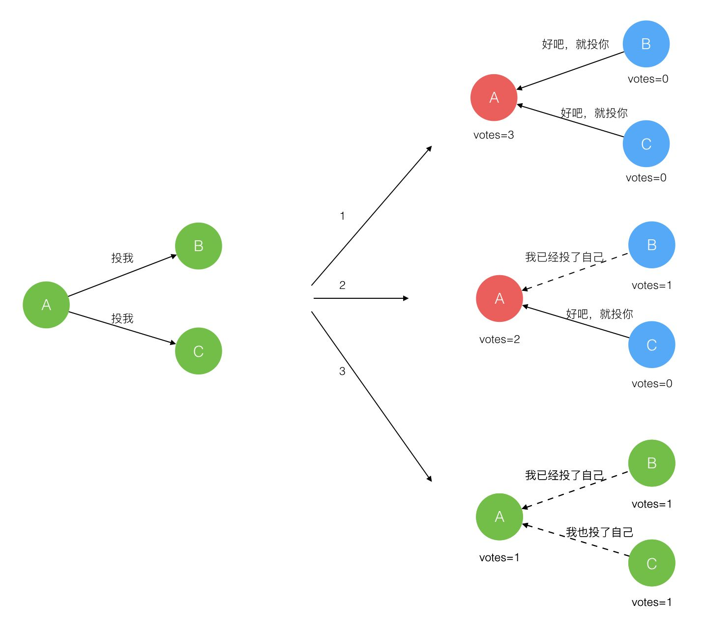

什么是Raft？
Raft是一个共识算法，用于管理副本日志，让多台服务器上的副本日志保持最终一致性。具有跟paxos一样的容错能力和性能。
Raft将一致性问题分解为多个子问题：领导选举、日志同步、安全性、日志压缩、成员变更等。
- 领导选举：集群中必须要选举一个领导出来，由它完全负责副本日志的管理。
- 日志复制：只有领导能接收客户端的修改命令，领导会通知集群最新的日志副本。
- 安全措施：通过一些措施确保系统的安全性，如确保所有状态机按照相同顺序执行相同命令的措施。
领导选举
Raft将系统中的角色分为领导者、追随者、候选人。
- 正常工作期间，系统中只有追随者和一个领导者。
- 领导者：接受客户端请求，并已两阶段提交的方式向追随者同步日志。
- 追随者：接受并持久化领导者同步的日志，在领导者告之日志可以提交之后，提交日志。
- 候选人：领导者选举过程中的临时角色。
- 当追随者在一定时间内没有收到领导者的消息，它就会变成候选人然后发起一次选举结果有以下三种情况：
- 赢得了多数的选票，成功选举为领导者；
- 收到了领导者的消息，表示有其它服务器已经抢先当选了领导者；
- 没有服务器赢得多数的选票，领导者选举失败，等待选举时间超时后发起下一次选举。
 - 选举出领导者后，领导者通过定期向所有追随者发送心跳信息维持其统治。若追随者一段时间未收到领导者的心跳则认为领导者可能已经挂了，再次发起领导者选举过程。
日志同步
参考文献：